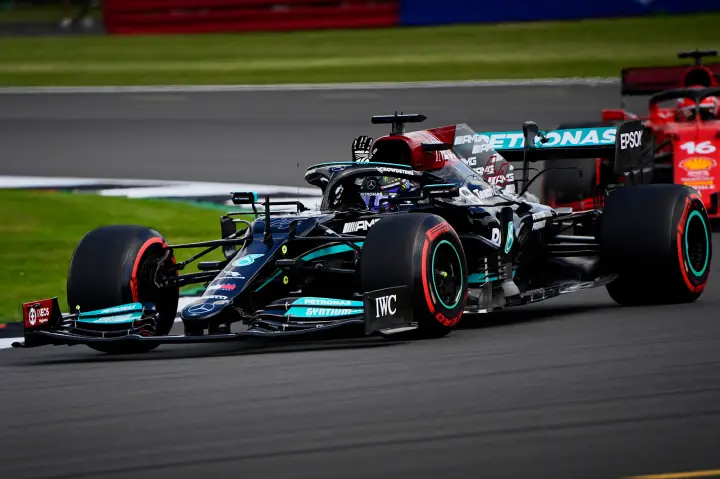
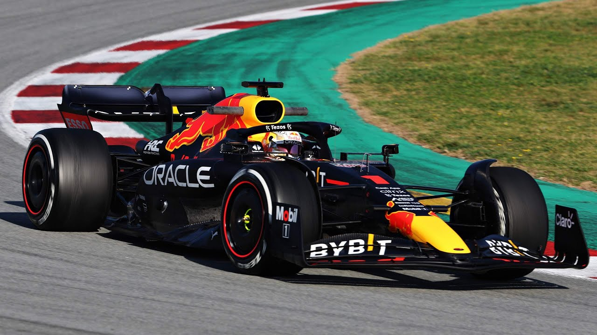
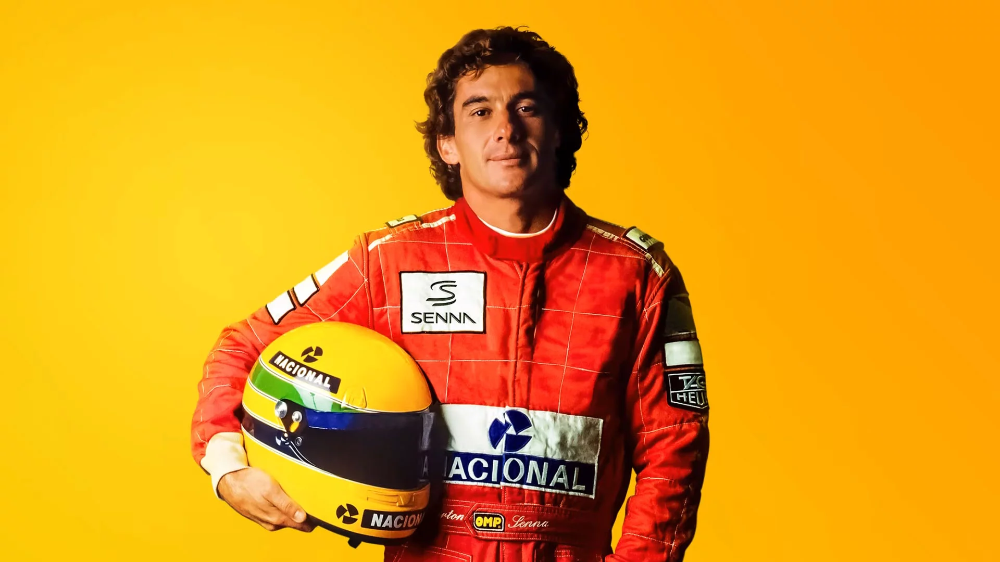

História da Fórmula 1
A história da Fórmula 1 começou oficialmente em 1950, quando a FIA organizou o primeiro campeonato mundial unificado, vencido por Giuseppe Farina em Silverstone. Naquele período inicial, o esporte era dominado por montadoras tradicionais como Alfa Romeo, Ferrari e Maserati, que utilizavam conceitos mecânicos herdados do período pré-guerra em competições que cruzavam as fronteiras europeias.
Com o passar das décadas, a categoria se transformou em um gigantesco negócio global, atraindo patrocínios de diversos setores e expandindo seu calendário para todos os continentes. As rivalidades históricas entre nomes como Fangio, Clark, Lauda e Senna foram fundamentais para construir a mística da competição, transformando pilotos em ícones culturais que transcendiam as pistas e capturavam a atenção de milhões de espectadores via rádio e televisão.
Atualmente, o campeonato é marcado pela transição para modelos de sustentabilidade e motores V6 turbo híbridos, mantendo o foco na disputa estratégica entre grandes equipes como Mercedes, Red Bull e Ferrari. O domínio recente de nomes como Lewis Hamilton e Max Verstappen reflete a continuidade de um ciclo de hegemonias que define a natureza competitiva da série, consolidando-a como a principal vitrine do automobilismo mundial.

Evolução dos carros
Os carros da Fórmula 1 evoluíram muito com o passar do tempo. Hoje os veículos possuem tecnologias avançadas de aerodinâmica, segurança e desempenho, permitindo velocidades extremamente altas.
Além da velocidade, a segurança também evoluiu bastante. Atualmente os carros possuem estruturas modernas capazes de proteger os pilotos em acidentes graves.

Voltar ao topoGaleria de Fotos




Referências:
Fórmula 1, FIA e imagens para fins educativos.
(Motorshow, Projeto motor, F1Mania, CAR.BLOG.BR, Assine Abril, Fandom).